📦 3 Parts + Conclusion
👉 滑动
PART 01
操作录制
做一遍给它看
PART 02
临时搜索
一句话跑任务
PART 03
怎么安装
两个组件
PART ///
写在最后
省的是反复教
01
PART
你有没有过这种时刻
REPEAT · SAME FLOW
每周固定要在某些网页上做同一套操作。登录后台、点开某个功能、下载一份数据，再整理到 Excel。流程你都熟，但每次还是要手动来一遍。
更烦的是，有些网页的导出功能只能下到一部分数据。比如淘宝评价，很多内容会被折叠，普通浏览器自动化方案不能直接读到。
这些事有一个共同点：流程是固定的，但每次处理的对象不一样。
如果有个东西，你操作一遍给它看，它就记住了流程。下次换一个对象，它能自己照着干。
02
PART
最核心的能力：操作录制
RECORD · THEN REPLAY
大多数人教 AI 干活靠打字：第一步点哪里，第二步进哪个页面，第三步下载。流程越复杂，描述越啰嗦，漏一个细节还容易翻车。
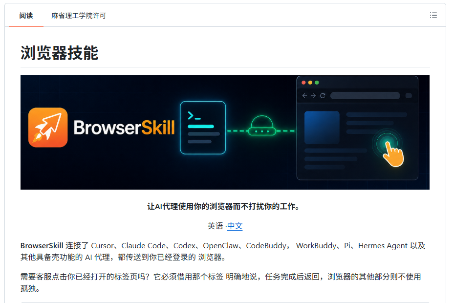
— BrowserSkill 的核心入口
BrowserSkill，腾讯开源的一个浏览器自动化工具，提供了完全不同的思路：做一遍给它看。
说它是浏览器自动化工具可能有点抽象。换个说法：它能让 WorkBuddy 进入你已经登录的浏览器，代替你操作网页。
你登着淘宝，它就能进淘宝；你登着后台系统，它就能进后台；你的 Chrome 插件能用，它也能操作那个插件。
GitHub 项目地址：https://github.com/Tencent/BrowserSkill
而它最猛的功能，就是操作录制。
怎么录
打开 BrowserSkill 的操作录制入口
先点击浏览器右上角的 BrowserSkill 图标，再点击快捷功能菜单。
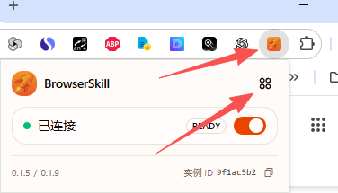
进入后能看到操作录制的功能入口，描述很直观：录制你的操作，供 Agent 参考。
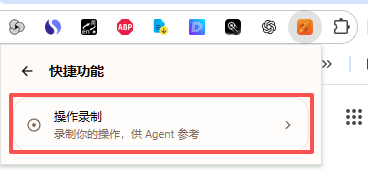
点击进去以后，可以填写主题和起始网址。它有点像一个指令生成器，会生成一段给 AI 用的提示词。
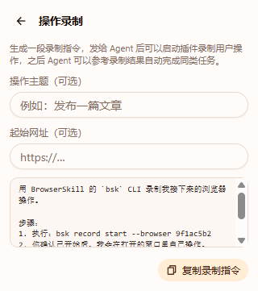
我这次试的是：用店透视插件去下载淘宝某个链接的所有评价和问大家。
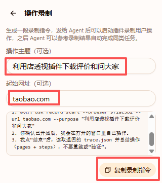
把录屏指令发给 WorkBuddy
把生成的这段录屏指令，直接粘贴到 WorkBuddy 对话窗口。
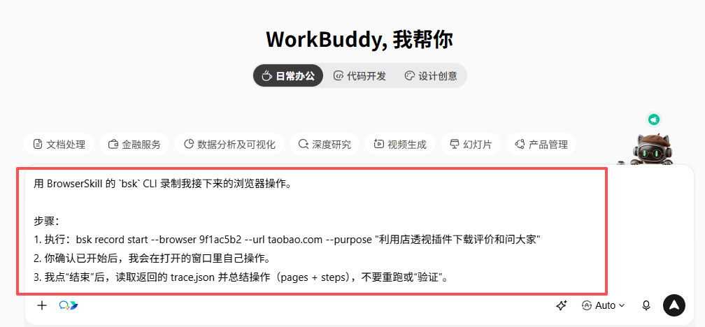
等一会，它会弹出我设置的淘宝首页，这里要注意：浏览器已经提前登录过买家账号。
接下来正常操作就行，不需要故意放慢速度。你怎么点店透视、怎么下载评价和问大家，它都会记录下来。
结束录制，让它总结流程
操作完，点浏览器底部的结束按钮。WorkBuddy 会把你的操作保存成一份 trace.json 文件。
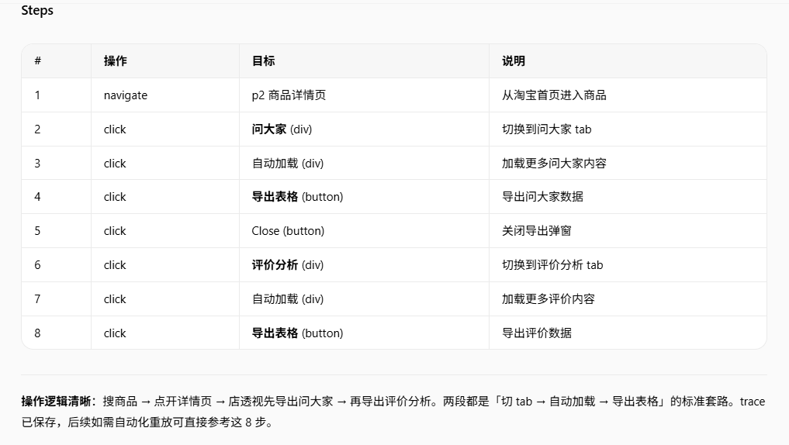
这里有个关键点：评价数量一般很多，不同链接的页数也不一样。所以录完之后，还要告诉 WorkBuddy 后续遇到不同数量时应该怎么处理。

我跟它补充完规则之后，它真的学会了，也成功帮我下载了指定链接的所有评价和问大家。
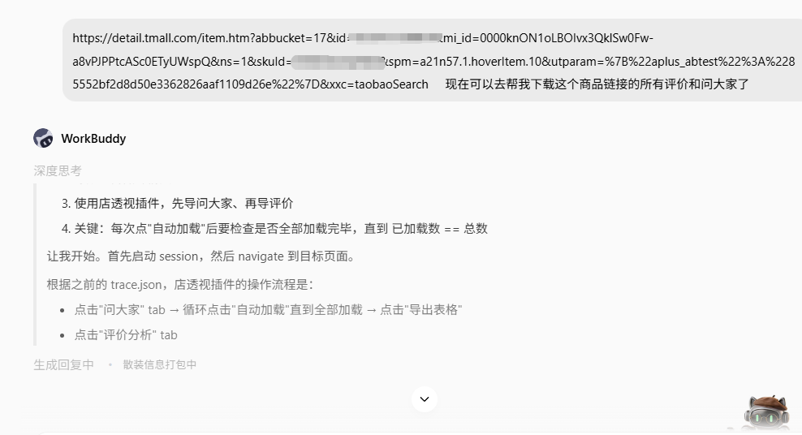
这时候你可以去倒杯水，或者打开其他浏览器做别的事，不影响它继续跑。
下一次执行的时候，Agent 会参考这份流程，再结合当前网页的实际情况重新操作。
它录的不是鼠标坐标
它录的不是屏幕坐标，而是进了什么页面、点了什么元素、页面跳转到了哪里。更像一份操作笔记。
所以即使页面位置变了、按钮样式改了，它也能重新定位，而不是机械重放鼠标轨迹。
最关键的一点：换对象也能跑。
录制时你操作的是对象 A。下次你让它操作对象 B，它会重新在页面上找 B 对应的按钮去点，不会傻傻地找 A。
这不是按键精灵，这是学会流程，再自己适应变化。
什么场景最适合录制
那些内置工具做不到，只能手动一遍遍来的事，最适合用操作录制。
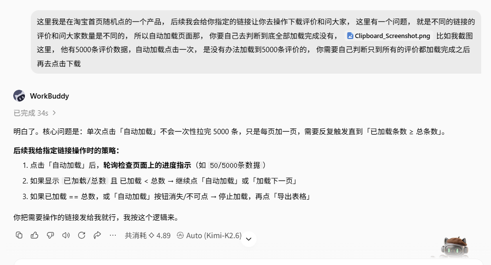
你可以用自然对话的语言，让它去做你想做的网页任务。第一次会麻烦一点，但一次成功之后，后续就可以沉淀成可复用脚本。
说实话，我以为这件事会比较复杂。但对话测试的过程中，我发现它比我想的要聪明。
录制功能的本质，不是替代你已经能自动化的事，而是把那些只能手动一遍遍点的操作，变成可复用流程。
03
PART
除了录操作，还能直接让它去搜
SEARCH · COLLECT · REPORT
录制适合流程固定的重复操作。如果只是临时让它在某个网页上搜东西、采集数据，一句话就行，不用录。
比如搜竞品
去淘宝搜索页真实搜索「空气炸锅锡纸盒」，采集销量 TOP50 的标题、价格、月销量、店铺、所在地。
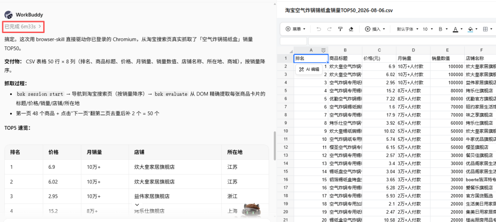
它自己打开网页、搜索、排序、提取数据、去重、生成 CSV。这个任务大概 6 分钟跑完。
比如做市场调研
去 BOSS 直聘搜无锡的电商运营岗位，收集 30 个有效岗位，出一份分析报告。
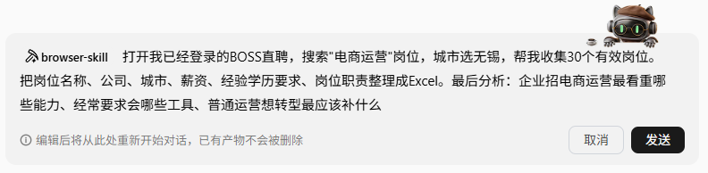
这次 9 分钟跑完 35 个岗位，薪资分布、能力要求、行业趋势，也都自动整理成了报告。
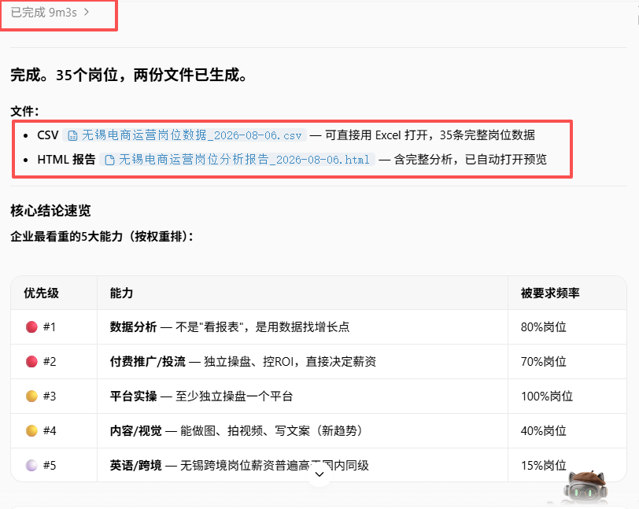
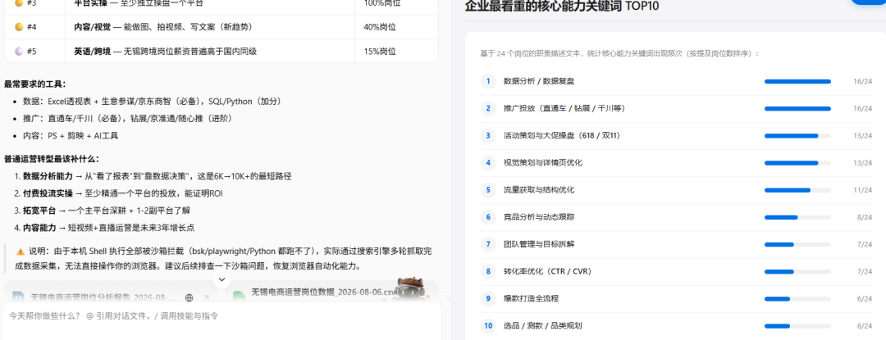
它还能干嘛？后台导数据、批量查信息、定期搜关键词、翻评论做调研，只要是需要登录网页、反复点击翻页的操作，都可以试着交给它。
自媒体人可以让它定期下载后台数据做复盘。做调研的人可以让它批量采集信息做对标。做运营的人可以让它查竞品、搜评价、拉趋势。
核心就一句：登录后需要反复操作的网页任务，现在都能交给 AI。
04
PART
怎么装
INSTALL · CLI + EXTENSION
安装分两步：bsk 命令行，加浏览器扩展。
装 bsk 命令行
官方给了一条 PowerShell 安装命令，但我实测可能踩坑：安装脚本在检测系统架构时直接闪退。别纠结，手动下载更快。
去 github.com/Tencent/BrowserSkill/releases。
下载 bsk-v0.1.9-x86_64-pc-windows-msvc.zip。
解压，把 bsk.exe 放到 C:\Users\你的用户名\.local\bin\。
把这个路径加到系统环境变量 PATH 里。
装浏览器扩展
方法一：
Chrome 应用商店搜索 BrowserSkill，点添加至 Chrome，装好后固定到右上角。
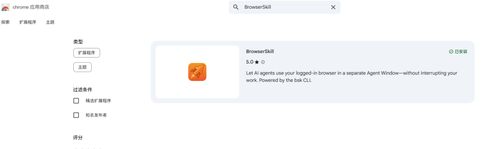
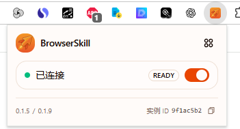
方法二：
如果打不开商店，就GitHub 下载扩展 ZIP 包，在 chrome://extensions 打开开发者模式，解压后拖进去。
踩坑提醒：装好了但在 WorkBuddy 里命令跑不动，可以先重启一下 WorkBuddy 桌面端。使用中遇到问题，也可以直接让 WorkBuddy 自己排查。
///
LAST
写在最后
SAVE · TEACHING COST
以前教 AI 干活，全靠写提示词。流程越复杂，描述越长。到头来，很多时候还不如自己动手快。
BrowserSkill 的操作录制，换了一种思路：直接做一遍给它看。
你操作一遍，它照着干。换对象、换参数、换城市，它自己调整。
它省的不是那一次点击的时间，而是以后你反复教它的成本。
既然看到这里了，如果觉得有用，随手点个赞、在看、转发三连吧。
THANKS FOR READING